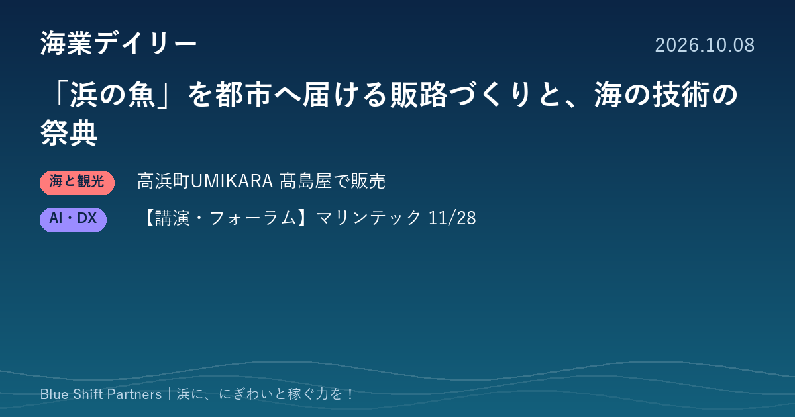
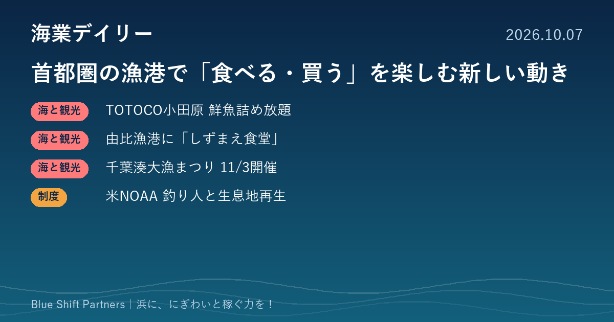
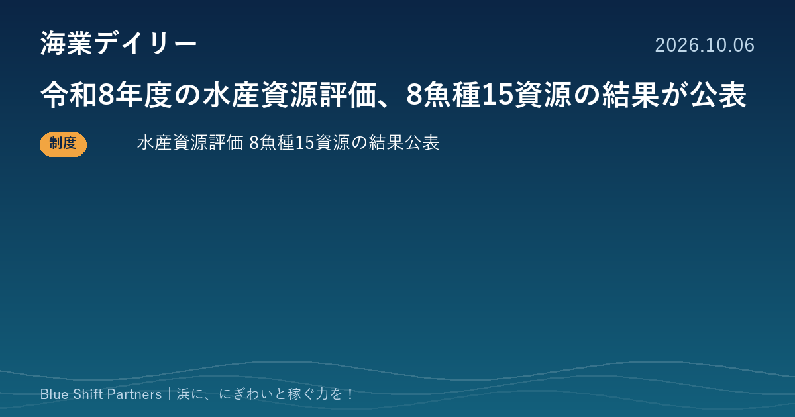

人は来るのに、地元にお金が残らない。担い手も足りない。 海辺のまちのその悩みに、集客から収益、人材、AI活用までを一本につないで応えます。 中小企業診断士が、現場と同じ目線で伴走します。
人を呼ぶ
食・体験・景観など、すでにある資源を束ねて売れる形にします。発信と予約の仕組みづくりまで。
稼ぐ力に変える
客単価・原価・季節変動・人手を数字で組み立て、補助金が終わっても続く収支にします。
続ける
担い手の確保と、AIを使った省力化。少人数でも回る仕組みを残します。
水産庁「官民連携海業振興ポータルサイト」掲載事業者 →
海業振興に賛同する民間事業者として登録されています（2026年10月）
認定経営革新等支援機関
国の認定を受けた支援機関です。補助金や経営改善計画の申請を、数値の裏づけまでお手伝いできます
中小企業診断士（経済産業大臣登録）
2007年登録。千葉県・東京都の中小企業診断士協会、マリノフォーラム21などに所属しています
対応可能地域：関東近郊を中心に、全国の漁港・漁村・離島のご相談に応じます。
ご相談先：漁業協同組合、自治体、観光協会・DMO、海業推進協議会、水産加工・飲食・宿泊・マリンスポーツの事業者などのみなさま。
ご相談先：漁業協同組合、自治体、観光協会・DMO、海業推進協議会、水産加工・飲食・宿泊・マリンスポーツの事業者などのみなさま。
新着情報
- 2026.10.08海業デイリー「浜の魚」を都市へ届ける販路づくりと、海の技術の祭典
- 2026.10.07海業デイリー首都圏の漁港で「食べる・買う」を楽しむ新しい動き
- 2026.10.06海業デイリー令和8年度の水産資源評価、8魚種15資源の結果が公表
- 2026.10.05海業デイリー明石の海辺で親子の海づくり体験、カナダは北極圏に多目的漁港
- 2026.10.02お知らせ水産庁の「官民連携海業振興ポータルサイト」に、海業振興に賛同する民間事業者として掲載されました。
- 2026.09.20お知らせ「海業デイリー」をカテゴリー別に読めるようにしました。
- 2026.09.19お知らせホームページを公開しました。海業のご相談を受け付けています。
海業デイリー
海業・水産・漁村観光のニュースをお届けしています。

2026.10.08
「浜の魚」を都市へ届ける販路づくりと、海の技術の祭典

2026.10.07
首都圏の漁港で「食べる・買う」を楽しむ新しい動き

2026.10.06
令和8年度の水産資源評価、8魚種15資源の結果が公表
まずはご相談ください
「何から始めればよいか分からない」という段階でも構いません。初回のご相談は無料です。
お問い合わせ：info@blueshift-partners.com